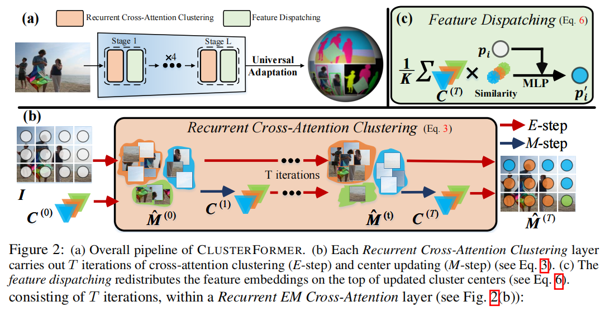
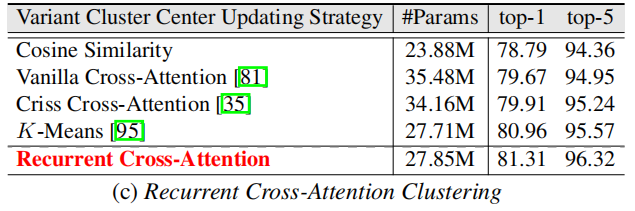
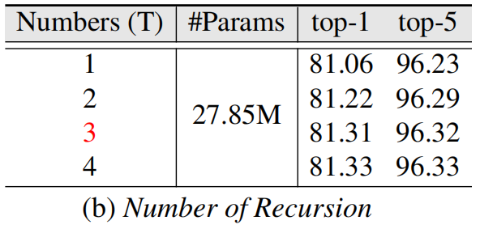

ClusterFomer:Clustering As A Universal Visual Learner

ClusterFomer: Clustering As A Universal Visual Learner
James C. Liang（罗彻斯特理工学院）、Yiming Cui（ 佛罗里达大学）、Qifan Wang（Meta AI）、Tong Geng（美国罗彻斯特大学）、Wenguan Wang（ 浙江大学）、Dongfang Liu∗（罗彻斯特理工学院）
摘要
本文介绍了一种基于CLUSTERing范式与TransFORMER的通用视觉模型——CLUSTERFORMER。该模型包含两个创新设计：①循环交叉注意力聚类，重新定义了TransFORMER中的交叉注意力机制，通过递归更新聚类中心，促进强大的表示学习；②特征调度，利用更新后的聚类中心，通过基于相似性的度量重新分配图像特征，形成一个透明的处理流程。这种优雅的设计简化了可解释和可转移的工作流程，能够处理不同层次的聚类粒度（即图像、框和像素级别）的异构视觉任务（即图像分类、对象检测和图像分割）。实证结果表明，CLUSTERFORMER在图像分类任务中，对ImageNet-1K数据集的top-1准确率达到了83.41%；在对象检测和实例分割任务中，对MS COCO数据集的mAP分别达到了54.2%和47.0%；在语义分割任务中，对ADE20K数据集的mIoU达到了52.4%；在全景分割任务中，对COCO Panoptic数据集的PQ达到了55.8%。我们希望通过这项研究，能够推动计算机视觉领域通用模型的范式转变。
1.引言
计算机视觉领域已经出现了针对不同视觉任务的专门解决方案（例如，ResNet
[34]用于图像分类，Faster RCNN [70]用于目标检测，Mask RCNN
[33]用于实例分割），旨在实现更优的性能。然而，神经科学研究[73,65,82,5]指出，人类的感知系统在处理复杂视觉刺激时展现出卓越的解释能力，不受特定任务的限制。这一特点与当前计算机视觉技术[95,44,46]的设计大相径庭，后者通常采用多样化的架构设计。
人类视觉具有独特的注意力机制，能够有选择性地聚焦于视觉场中的相关部分，同时忽略无关信息[81,40]。这可以类比为一种聚类方法[2,3,89]，其中单个像素点被分解并重组为相关概念，以应对各种任务。这实际上是一个层次化的过程，通过组合基本的视觉元素，如线条、形状和颜色，来构建更高级别的物体、场景和个人的抽象[79,59,66,27]。这项工作受到人类视觉系统卓越能力的启发，旨在开发一个能够复制这种无与伦比能力的通用视觉模型。
为此，我们采用了一种基于聚类的策略，该策略在不同粒度级别上运行，以提高视觉理解。通过解决不同的视觉任务（如图像分类、目标检测和图像分割），我们考虑了视觉信息在图像、框和像素级别的具体分组方式。我们将这种方法命名为CLUSTERFORMER（第3.2节），因为它利用了集成在TransFORMER架构中的聚类机制，创建了一个通用网络。该方法首先将图像嵌入到离散的标记中，这些标记代表了被分组成不同集群的关键特征。然后，通过一个递归的聚类交叉注意力机制，考虑中心维度上的相关特征表示，递归地更新集群中心。一旦完成中心分配和更新，特征将根据更新后的集群中心进行重新分配，并将两者输入到目标任务的头部。
CLUSTERFORMER具有几个吸引人的特点。
❶灵活性：CLUSTERFORMER是一种基于聚类的方法，能够在一个框架下处理广泛的视觉任务，并展现出卓越的性能（见图1）。其核心理念是处理不同粒度级别的任务（如图像级分类、框级检测、像素级分割等），旨在实现一种通用的视觉解决方案。
❷可转移性：CLUSTERFORMER编码器生成的聚类中心直接作为任务头的初始查询，用于聚类，从而使整个架构能够将底层表示用于目标任务的预测（见表4）。这种设计巧妙地促进了从上游任务（即在ImageNet[72]上训练的编码器）学到的知识向下游任务（例如，在COCO[49]上训练的实例分割解码器）的迁移。
❸可解释性：无论目标任务如何，CLUSTERFORMER的决策过程都通过一个透明的管道，持续根据基于相似性的度量更新聚类中心。由于推理过程是自然可推导的，因此模型的推理行为可以即时解释（见第4.2节）。这使得CLUSTERFORMER与大多数现有统一模型[17,44,95]区别开来，后者往往无法精确解释其工作原理。
为了有效评估我们的方法，我们在实验中展示了：在第4.1.1节中，针对图像分类任务，CLUSTERFORMER在从头训练时，与Swin Transformer[53]相比，在ImageNet [72]数据集上的前1名准确率提高了0.13∼0.39%，在第4.1.2节中，使用我们预训练的ImageNet模型时，该方法可以扩展到目标检测任务，并且在COCO [49]数据集上，与Dino [96]相比，Swin Transformer的性能显著提升（mAP提高了0.8∼1.1%）。此外，我们的方法还可以适应更通用的像素级任务，如语义分割（见第4.1.3节）、实例分割（见第4.1.4节）和全景分割（见第4.1.5节）。例如，我们在ADE20K [101]数据集上的语义分割mIoU提高了0.6∼1.3%，在MS COCO [49]数据集上的实例分割mAP提高了1.0∼1.4%，在COCO Panoptic [42]数据集上的全景分割PQ提高了1.5∼1.7%，与Mask2Former [17]相比。我们的算法经过了广泛的测试，核心组件的有效性也通过第4.2节中概述的一系列消融研究得到了验证，
2.相关工作
通用视觉模型
Transformers[81]在推动全球雄心方面发挥了关键作用，通过相同的架构能够应对不同具体任务的模型，体现了这些最新发展[23,17,16,95,96,4,80,30,57,86]在该领域的潜力。在视觉领域，主流研究主要集中在开发编码器[53,88]或解码器[44,94]上。编码器的核心在于开发基础模型[4,53,24,22]，这些模型经过大量数据训练，能够适应并微调以应对各种下游任务。例如，Swin
Transformer
[53]通过采用由移位窗口组成的分层结构，成为计算机视觉领域的通用骨干；ViT-22B
[22]将架构参数化至220亿，并通过学习大规模数据，在多种视觉任务上表现出色。通过学习大规模数据，该方法在多种视觉任务中表现出色。相反，[23,17,16,95,94,44,96,87,50,20,52,19,21,51,93,76,37,99,25,48]的解码器研究旨在解决同质目标任务，通过使用查询来描绘视觉模式。例如，Mask2Former
[17]将掩码信息融入Transformer架构，统一了各种分割任务（如语义分割、实例分割和全景分割）；Mask-DINO
[44]通过直接利用查询嵌入进行目标任务预测，将解码过程从检测扩展到分割。概念上不同，我们简化了一个基于聚类的优雅的系统工作流，并在不同的聚类粒度下处理异构视觉任务（例如，图像分类、对象检测和图像分割）。
视觉中的聚类
传统视觉[39,28,29,55,91,1,10,61,6,58]中的聚类算法可分为分层模式和分割模式。分层方法[62,38]涉及像素层次结构的建模，并通过迭代分割和合并像素对形成聚类，直至达到饱和状态。这种方法避免了事先确定聚类数量的必要性，并解决了局部最优问题[98,12]。然而，它仅考虑每个阶段的相邻像素，无法利用关于聚类全局配置或维度的先验信息[69,64]。相比之下，部分聚类算法[78,36]直接生成具有预设数量的聚类结构，并将像素单独分配给一个聚类。这种设计展现出动态特性，使像素能够在簇[11,63]之间转换。通过采用适当的措施，这种方法能够有效地将复杂知识整合到簇中心。作为强大的系统，人类视觉融合了聚类模式[89,83,67]的优势。我们能够根据不同的尺度对相似的实体进行分组。同时，我们还能仅基于形状、颜色或纹理对物体进行有效分类，而无需依赖层次信息。基于上述见解，我们从聚类的角度重新设计了Transformer架构中的注意力机制（§3.2），以解析视觉复杂性的层次结构。
3.方法
3.1前言
聚类
聚类的目标是将一组数据点（记为X∈R
n×d）根据它们的内在相似性划分为C个不同的簇，同时确保每个数据点仅属于一个簇。为了实现这一目标，需要优化数据点的分层，综合考虑其特征和位置信息，以形成连贯且有意义的分组。聚类方法通常采用高级相似性度量，如余弦相似性，来评估数据点与簇中心的距离。此外，这些方法还会考虑点的空间位置，以实现更精确的分组。
通用聚类的交叉注意力机制
从Transformer解码器架构[81]中获得灵感，现代端到端架构[17,9]采用了一种基于查询的方法，其中一组K个查询，\(C=\left[c_{1};\cdot\cdot\cdot;c_{K}\right]\in\mathbb{R}^{K\times
D}\)，通过一系列交叉注意力块进行学习和更新。在此背景下，我们重新定义了“C”这一术语，将其与每一层的聚类中心关联起来。具体而言，每层都使用交叉注意力机制来自适应地聚合图像特征，并随后更新查询：
\[C\leftarrow C+\mathrm{softmax}_{H
W}(Q^{C}(K^{I})^{\top})V^{I},\] 其中，\(Q^{C}{\in}\mathbb{R}^{K\times
D},V^{I}{\in}\mathbb{R}^{H W\times D},K^{I}{\in}\mathbb{R}^{H W\times
D}\)分别表示查询、键和值的线性投影特征。上标“\(C\)”和“\(I\)”分别代表从中心和图像特征投影出的特征。受[95]的启发，我们重新解释了交叉注意力机制，将其视为聚类求解器，通过将查询视为聚类中心，并沿查询维度(K)而非图像分辨率（HW）应用softmax函数来实现：
\[C\leftarrow
C+\mathrm{softmax}_{K}(Q^{C}(K^{I})^{\top})V^{I},\]
3.2 CLUSTERFORMER
在本小节中，我们介绍CLUSTERFORMER（见图2(a))。该模型通过一系列分层阶段，实现了多尺度表示学习，以适应各种场景。在每个阶段，图像块被转换为特征嵌入[81,53,24]，这些嵌入通过一个统一的流程——首先是循环交叉注意力聚类，然后是特征调度——被分组到不同的簇中。
 \[\begin{array}{rrl}E-step:&\hat{M}^{(t)}&=\mathrm{softmax}_{K}(Q^{C^{(t)}}(K^{I})^{\top}),\\M-step:&C^{(t+1)}&=M^{(t)}V^{I}\in\mathbb{R}^{K\times D},\end{array}\]
3.2.1 循环交叉注意力聚类
考虑到特征嵌入\(I~\in~\mathbb{R}^{H W\times D}\)和初始中心\(C^{(0)}\)，我们封装了迭代的期望最大化（EM，Expectation-Maximization）聚类过程，其中\(t\in\{1,\cdot\cdot\cdot,T\}\)，\({\hat{M}}\in[0,1]^{K\times H W}\)表示“软”聚类分配矩阵（即K个聚类的概率分布图）。根据第3.1节的定义，\(Q^{C}\in\mathbb{R}^{K\times D}\)表示从中心C投影出的查询向量，而\(V^{I},K^{I}\ \in\ \mathbb{R}^{H W\times D}\)则分别对应从图像特征\(I\)投影出的值向量和键向量。循环交叉注意力方法通过迭代更新聚类成员\(\hat M\)（即E-step）和中心\(C\)（即M-step），这种动态更新策略体现了分区聚类的核心思想。该方法具有以下几个吸引人的特点：
效率：虽然传统的自注意力机制的时间复杂度为\({\cal O}(H^{2}W^{2}D)\)，但循环交叉注意力方法的下限为\({\cal O}(TKHWD)\)。这主要是因为TK≪HW（例如，Swin [53]中的4165对比我们方法中的1200）。具体来说，在编码过程中，金字塔架构[88,53]的特性使得TK可以远小于HW，尤其是在早期阶段。值得注意的是，在每次迭代中，只有Q矩阵需要更新，而K和V矩阵只需进行一次计算。因此，整个模型具有系统效率（见表6c)。
 透明：透明度的关键在于聚类中心在我们循环交叉注意力机制中所扮演的独特角色。通过聚类过程生成的聚类中心，作为特征的‘原型’。这些‘原型’作为每个聚类的代表性样本，反映了该聚类内数据点最显著或最具特征性的特点。此外，循环交叉注意力方法遵循了广泛认可的EM聚类算法，提供了一个清晰透明的框架。这种聚类中心分配在表示学习过程中以人类可理解的方式运作（见图3），促进了即时的可解释性，使人们能够更直观地理解潜在的关系。
非参数化的优雅：循环交叉注意力机制通过在迭代过程中共享查询、键和值的投影权重，实现了递归特性。这种方法有效地确保了递归性，而无需引入额外的学习参数（见表6b)。

由于整体架构具有层次性，循环交叉注意力能够全面探索表示的粒度，这反映了层次聚类的过程： \[C^{l}=\mathrm{RCA}^{l}(I^{l},C_{0}^{l}),\] 其中，RCA表示循环交叉注意力层。\(I^l\)是通过标准池化操作在不同层上生成的图像特征图，分辨率为\(H/2^{l}\times W/2^{l}\)。\(C^l\)是第l层的聚类中心矩阵，而\(C_0^l\)则是第l层的初始中心。不同层的循环交叉注意力参数\(\{\mathrm{RCA}^{l}\}_{l=1}^{L}\)不共享。此外，我们从图像网格中初始化这些中心： \[[c_{1}^{(0)};\cdot\cdot\cdot\cdot c_{K}^{(0)}]=\mathrm{FFN}(\mathrm{Adptive}_{-}\mathrm{Pooling}_{K}(I)),\] 其中，FFN代表位置前馈网络，这是Transformer架构的重要组成部分。它包含两个全连接层和一个用于隐藏层的激活函数。\(\mathrm{Adptive}_{-}\mathrm{Pooling}_{K}(I)\)指的是从I个特征中心中选择K个特征中心，通过自适应采样计算出合适的窗口大小，以自适应地达到所需的输出大小，相比传统池化方法，这种方法提供了更高的灵活性和精度。
3.2.2 特征调度
在完成聚类分配后，所提出的方法采用了一种自适应过程，根据相似性（见图2(c))来调度每个聚类内的补丁，从而对聚类内的整体结构和上下文形成更加连贯和全面的理解。对于每个补丁嵌入\(p_{i}\in I\)，更新后的补丁嵌入\(p_{i}^{\prime}\)计算如下： \[p_{i}^{'}=p_{i}+\mathrm{MLP}(\frac{1}{K}\sum_{k=0}^{K}s i m(C_{k},p_{i})* C_{k})\] 该方程通过考虑特征嵌入与聚类中心(C)之间的相似性，并根据这些相似性的权重进行加权，来实现特征嵌入的自适应调度。通过利用聚类中心提供的内在信息，该方法能够优化特征嵌入，从而更好地理解图像的底层结构和背景。所有特征表示都被用于解码过程中的目标任务处理。在第3.3节中，我们将详细讨论结束任务的具体实现。
3.3实施细节
CLUSTERFORMER的实现细节和框架如图2a所示。我们采用了Swin Transformer [53]的架构和配置，相关代码可在此处获取（https://github.com/ClusterFormer/ClusterFormer）。
- 编码器
编码过程旨在为给定图像生成表示层次结构，用\(\{I^l\}\)表示，其中\(l=\{1,2,3,4\}\)。这一过程从特征嵌入开始，将图像转换成独立的特征标记。接下来，通过多头计算[81,53]技术，将这些嵌入的特征分配到不同的头部。中心初始化（公式5）作为初始化聚类中心的起点，而递归交叉注意力聚类（公式3）则用于递归地更新这些中心。一旦中心更新完成，特征将根据与更新后的中心的关联（公式6）进行重新分配。进一步的解码过程利用了中心和特征，确保了全面的学习效果。 - 图像分类适应
分类头是一个单层多层感知机（MLP），它利用编码器的聚类中心进行预测。 - 检测和分割适应
下游任务头包含六个Transformer解码器层，其核心设计为循环交叉注意力聚类（公式4）。每个层均执行三次迭代。
4实验
我们在四个基准上对我们的方法进行了五项视觉任务的评估，即图像分类、目标检测、语义分割、实例分割和全景分割。
用于图像分类的ImageNet-1K数据集
ImageNet-1K[72]包含涵盖不同类别（如动物、植物和车辆）的高分辨率图像。按照常规流程，该数据集被划分为训练集、验证集和测试集，分别包含120万、5万和10万张图像。
用于目标检测和实例分割的MS COCO数据集
COCO
[49]数据集包含日常场景中80种常见物体的密集标注。按照[49]的标准做法，该数据集被划分为训练集（115,000张）、验证集（5,000张）和测试开发集（20,000张）。
用于语义分割的ADE20K数据集
ADE20K
[101]数据集提供了一个包含像素级标注的图像集合，涵盖了150个不同物体类别，涵盖室内和室外场景。该数据集分为训练集、验证集和测试集，分别包含20,000张、2,000张和3,000张图像。
用于全景分割的COCO
Panoptic数据集
COCO全景数据集[42]包含80个“物体”类别和53个“物品”类别的精心标注。按照[42]的标准做法，该数据集被划分为训练集、验证集和测试集，分别包含115,000张、5,000张和20,000张图像。
接下来的部分首先介绍了每个任务的主要结果（第4.1节），随后是一系列消融研究（第4.2节），旨在验证每种调节设计的有效性。
4.1主要结果
4.1.1图像分类实验
4.1.2目标检测实验
4.1.3语义分割实验
4.1.4实例分割实验
4.1.5全景分割实验
4.2消融研究
5结论
本研究采用了一种以聚类为基础的范式为视角的认识论方法，提出了一个名为CLUSTERFORMER的通用视觉框架。该框架旨在应对不同聚类粒度的多样化视觉任务。通过利用聚类的见解，我们为递归聚类定制了交叉注意力机制，并引入了一种新的特征调度方法。实证研究提供了大量证据，证明了这一系统方法的有效性。基于其有效性，我们推断，从聚类的角度来看，所提出的通用解决方案将对更广泛的视觉任务产生重大影响。这一问题仍是我们未来研究的重点。
6实验代码结构
其主要结构和Image-as-Set-of-Points相似，最主要的区别在于核心的聚类模块，其使用了QKV的方式计算聚类中心和周围像素的距离，其具体的流程如下：
拆分通道数：
对图片分块：
通过池化操作初始化N*N个聚类中心：
计算QKV：
复原：
筛查最后的相似度：
最后以筛查的结果，得到预测图：